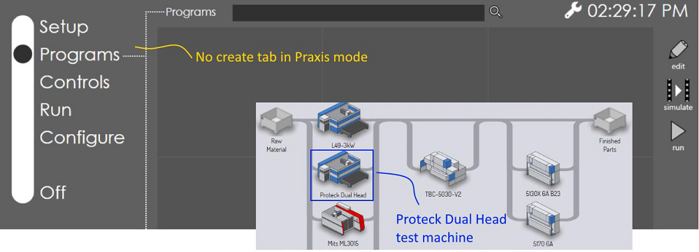

● The Programs page in Vulcan displays layouts from Praxis’ production queue.
● Operators can edit these layouts and save them back to Praxis.
● Operators can run the programs. The run progress is reported back and is reflected in Praxis.
● Operators can Add/Remove/Update LTT pages in Vulcan and push the updates to Praxis enabled Flux stations.
Download Vulcan setup and install Vulcan standalone first.
● Activate and switch to the Programs page. You should see the sample demo programs (please contact Praxis support team for a Vulcan license).
● Install Praxis with Vulcan Link component.
● Launch Praxis to complete the setup.
Praxis installs Proteck Dual Head laser machine to test the Vulcan connection and updates the Vulcan machine automatically. There is no create page in Vulcan as it produces programs created from Praxis when connected. 
Note: Install the dual head machine manually if the automatic machine installation fails. You will also need to set the Vulcan machine by editing C:\ProgramData\Metamation\Vulcan\Data\Settings.curl file (set MachineId:2230001) after installing the machine in Praxis.